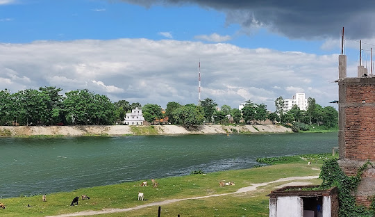
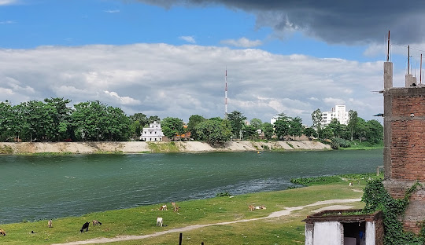

Muzaffarpur, a prominent city in the Indian state of Bihar, is known for its historical significance, cultural heritage, and economic contributions. It is often referred to as the "Lychee Kingdom" due to its world-famous Shahi lychees, which are highly sought after for their sweetness and aroma. Situated on the banks of the Burhi Gandak River, Muzaffarpur serves as a major commercial and educational hub in North Bihar. The city has a rich historical background, with influences from ancient kingdoms and colonial rule. It is home to several educational institutions, including Babasaheb Bhimrao Ambedkar Bihar University, which attracts students from different parts of the state. The region also boasts important landmarks like the Ramna Devi Mandir and Jubba Sahni Park, adding to its cultural vibrancy. With its blend of tradition and modernity, Muzaffarpur continues to play a vital role in Bihar’s economic and social landscape.
 
